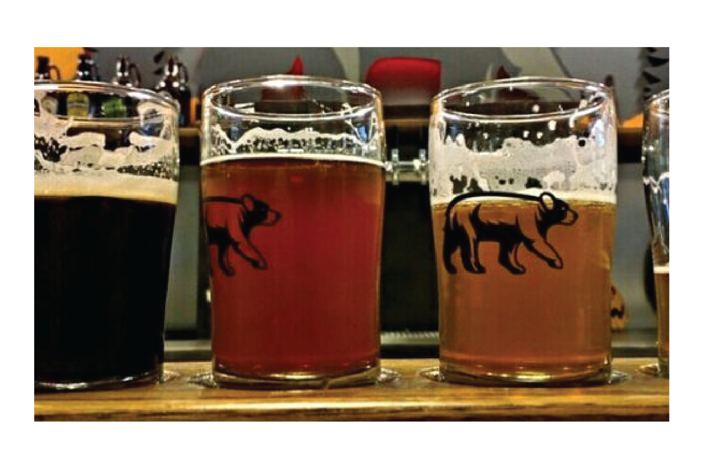

Growler Magazine
"An Homage to Brewing in Minnesota"
The Growler April 2016OMNI Brewing will introduce “An Homage to Brewing in Minnesota,” an eleven foot, commissioned oil painting that will permanently grace its taproom walls. The work, completed by locally acclaimed artist Mat Ollig, will be unveiled at a celebration on Thursday, April 7th at 6pm at OMNI Brewing (9462 Deerwood Lane N, Maple Grove, MN).
City Pages
OMNI Brewing Co. Taproom Brings Craft Beer Fire to Maple Grove
Loren Green January 2016 Some breweries open with a bang, others quietly. Omni Brewing Co. falls more on the softer side of things. The Maple Grove brewery opened this past fall and has been serving the local market since, making their beer in-house and for a select few hyperlocal establishments in their surrounding western suburb.
Maple Grove Magazine
OMNI Brewing Makes a Splash in Maple Grove
Cyd Haynes January 2016Finally! Our corner of the Twin Cities gets its very own brewpub. No longer must we trek down to the Northeast neighborhood of Minneapolis to be trendy and relevant. Yes, you can get a great local brew at Granite City or 3 Squares, but now you can chug a craft beer that’s minutes old in an official taproom. 
OMNI Brewing Co.
9462 Deerwood Lane N.
Maple Grove, MN
info@omnibrewing.com
© Copyright OMNI Brewing Company, LLC Maple Grove, MN
9462 Deerwood Lane N.
Maple Grove, MN
info@omnibrewing.com
© Copyright OMNI Brewing Company, LLC Maple Grove, MN
Taproom Hours
Tuesdays: 3-10pm
Wednesdays: 3-10pm
Thursdays: 3-10pm
Fridays: 12-11pm
Saturdays: 12-11pm
Sundays: 12-10pm
Tuesdays: 3-10pm
Wednesdays: 3-10pm
Thursdays: 3-10pm
Fridays: 12-11pm
Saturdays: 12-11pm
Sundays: 12-10pm